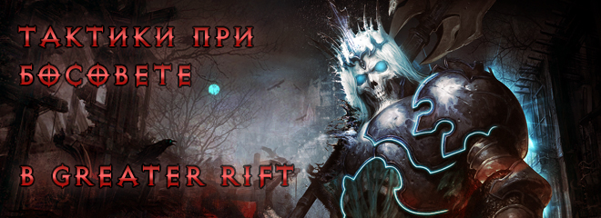
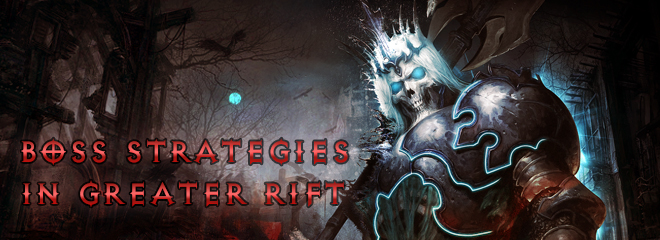

- Не са изброени в темата / Прилагам собствени [1 гласа - 6%]
- Не, пуцам там, както дойде. [16 гласа - 89%]
- Прилагам някои от изброените. [1 гласа - 6%]
 Анкета: Прилагате ли тактики при Босовете?
Анкета: Прилагате ли тактики при Босовете?Активни
Diablo 3 [ Общи дискусии ]

Офлайн
Benifios

Adramelech
4856
Diablo 3 Клан: battle tag battle tag
<PinCode52>  |
[Ръководство] Greatеr Rift Guardian Тактики
ОфлайнАвтор: Benifios на 15/02/2017 - 15:50ч. | Benifios на 16/02/2017 - 14:15ч.  В това ръководство ще разгледаме полезни съвети и тактики относно Пазителите в Greater Rifts. Съветите са ми главно за парти от 4 човека, но също така някои от нещата могат да се ползват както за парти от 3,2 играчи дори и за соло. Хубаво е да знаем някои от нещата за тях, за да се опитаме да извлечем максимум преимущество над тези босове. Преди да разгледаме отделните босове нека да изясним няколко много важни неща.
Erethon  Какви атаки притежава
Как да процедираме :
Eskandiel  Какви атаки притежава
Как да процедираме :
Infernal Maiden  Какви атаки притежава
Как да процедираме :
Man Carver  Какви атаки притежава
Как да процедираме :
Orlash  Какви атаки притежава
Как да процедираме :
Perdition  Източник Какви атаки притежава
Как да процедираме :
|
{kind=link}
Офлайн
|
Benifios
Adramelech
4856
Diablo 3 Клан: battle tag battle tag
<PinCode52> |
# 1: [Ръководство] Greatеr Rift Guardian Тактики
ОфлайнАвтор: Benifios на 15/02/2017 - 19:59ч. | Benifios на 16/02/2017 - 09:37ч. Agnidox  Какви атаки притежава
Как да процедираме :
Blighter  Какви атаки притежава
Как да процедираме :
Bloodmaw  Какви атаки притежава
Как да процедираме :
Bone Warlock  Какви атаки притежава
Как да процедираме :
Cold Snap  Какви атаки притежава
Как да процедираме :
Crusader King  Какви атаки притежава
Как да процедираме :
Ember  Какви атаки притежава
Как да процедираме :
|
Офлайн
|
Benifios
Adramelech
4856
Diablo 3 Клан: battle tag battle tag
<PinCode52> |
# 2: [Ръководство] Greatеr Rift Guardian Тактики
ОфлайнАвтор: Benifios на 15/02/2017 - 23:19ч. | Benifios на 16/02/2017 - 09:45ч. Perendi  Какви атаки притежава
Как да процедираме :
Saxtris  Какви атаки притежава
Как да процедираме :
Stonesinger  Какви атаки притежава
Как да процедираме :
Tethrys  Какви атаки притежава
Как да процедираме :
|
Офлайн
|
Benifios
Adramelech
4856
Diablo 3 Клан: battle tag battle tag
<PinCode52> |
# 3: [Ръководство] Greatеr Rift Guardian Тактики
ОфлайнАвтор: Benifios на 16/02/2017 - 09:47ч. | Benifios на 16/02/2017 - 09:49ч. The Binder  Какви атаки притежава
Как да процедираме :
Raiziel  Какви атаки притежава
Как да процедираме :
Rime  Какви атаки притежава
Как да процедираме :
Sand Shaper  Какви атаки притежава
Как да процедираме :
Voracity  Какви атаки притежава
Как да процедираме :
Hamelin  Какви атаки притежава
Как да процедираме :
Тhe Choker  Какви атаки притежава
Как да процедираме :
 Източник на афиксите, които притежават босовете : diablo.wikia Източници на част от снимките : Тук , Тук и diablo.wikia |
{kind=link}
|
ThePeanut
Archangel
 832 | 815 Diablo 3 Клан: battle tag battle tag
<HOMEWORLD>  |
# 4: [Ръководство] Greatеr Rift Guardian ТактикиОфлайнАвтор: ThePeanut на 16/02/2017 - 13:02ч. Браво за статията. За мене най-труден: 1. Перенди- за соло и за парти - обикновенно се телепортва при елемена на COE, който прави най голям демидж. 2. Voracity - за парти е голям проблем при недостатъчно добър монк, за соло е ужас на високите нива се излиза. На хардкор не го бият. 3. Rime - почти същото като Voracity Всички останали босове са сравнително лесни за биене, проблем на някой е че бягат, но едва ли ще Ви убият! |
KOMAP

Nephalem
1112 | 640 Diablo 3 Клан: battle tag battle tag
<Bulgarian Nephalems> |
# 5: [Ръководство] Greatеr Rift Guardian Тактики
ОфлайнАвтор: KOMAP на 16/02/2017 - 15:53ч. radiance написа на 16/02/2017:
Генератор Монк / Магьосник - Целта Ви е да убиете Боса
Не че нещо ама така като гледаме Бени е хвърлил много труд за нищо. Всеки който е достатъчно добре екипиран за високи рифтове е среща босовете стотици пъти. Знае какво правят и как да ги набие. |
|
Benifios
Adramelech
4856
Diablo 3 Клан: battle tag battle tag
<PinCode52> |
# 6: [Ръководство] Greatеr Rift Guardian Тактики
ОфлайнАвтор: Benifios на 16/02/2017 - 16:27ч. KOMAP написа на 16/02/2017-15:53ч.:
radiance написа на 16/02/2017:
Генератор Монк / Магьосник - Целта Ви е да убиете Боса
Не че нещо ама така като гледаме Бени е хвърлил много труд за нищо. Всеки който е достатъчно добре екипиран за високи рифтове е среща босовете стотици пъти. Знае какво правят и как да ги набие. Тука не си напълно прав, а и целта ми е да помогна на по-неопитните играчи, които им трябват насоки. Има много хора с наистина много добра екипировка, но умения никакви. Играл съм с такива предни сезони и дори бързи рифтове се превръщат в агонизиращи рифтове... все още ми се върти из главата как аз и forge получихме braindamagе от хора, които не знаят какво правят и не слушат когато има кажеш. Темата съм я и направил и с друга цел, но за това ще постна допълнително. |
Офлайн
|
Shivachev
Greater Mummy
191 | 327  |
# 7: [Ръководство] Greatеr Rift Guardian ТактикиОфлайнАвтор: Shivachev на 16/02/2017 - 18:41ч. | Shivachev на 16/02/2017 - 18:42ч. Blooadmaw, Voracity, Orlash, Тhe Choker ... много играчи като цяло не ги предпочитат. За соло е голяма драма. |
|
Benifios
Adramelech
4856
Diablo 3 Клан: battle tag battle tag
<PinCode52> |
# 8: [Ръководство] Greatеr Rift Guardian Тактики
ОфлайнАвтор: Benifios на 18/02/2017 - 20:40ч. |
|
dominiko
Skeleton
52
|
43
Diablo 3 Клан: battle tag battle tag
<RoS777> |
# 9: [Ръководство] Greatеr Rift Guardian ТактикиОфлайнАвтор: dominiko на 20/02/2017 - 19:32ч. Полезна статия, за която ти благодаря. Аз примерно не знаех за Blinding Flash, а съм загубил "някой и друг час" из грифтовете |
Подобни теми
 Ръководство за Greater Rift и Keystones 65+
- От Benifios на: 17/06/2015 - 21:29ч.
World Fastest Solo Rift
- От vaskobgn на: 24/04/2014 - 05:19ч.
3m32s T6-Rift
- От Benifios на: 24/04/2014 - 16:42ч.
До коя Rift difficulty стигнахте в новите рифтове?
- От Mlucklich на: 26/06/2014 - 08:29ч.
Fighting Rift Guardians [some tips]
- От Benifios на: 25/05/2015 - 14:31ч.
Ръководство за Greater Rift и Keystones 65+
- От Benifios на: 17/06/2015 - 21:29ч.
World Fastest Solo Rift
- От vaskobgn на: 24/04/2014 - 05:19ч.
3m32s T6-Rift
- От Benifios на: 24/04/2014 - 16:42ч.
До коя Rift difficulty стигнахте в новите рифтове?
- От Mlucklich на: 26/06/2014 - 08:29ч.
Fighting Rift Guardians [some tips]
- От Benifios на: 25/05/2015 - 14:31ч.
В момента 0 потребителя разглеждат темата
Кой е Онлайн?
В момента онлайн има 1 регистрирани потребители. Общо 14 онлайн за последните 24 часа.
Онлайн потребители: forge
Най-активни днес:
Легенда: Администратор, Модератор, Почетен потребител, Потребител
Статистика:
Мнения: 103428 | Теми: 6569 | Потребители: 6393 | Най-новият ни потребител е: aggregate